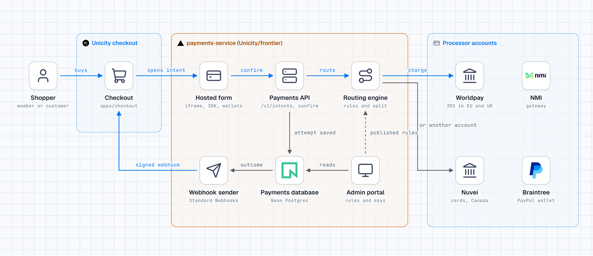
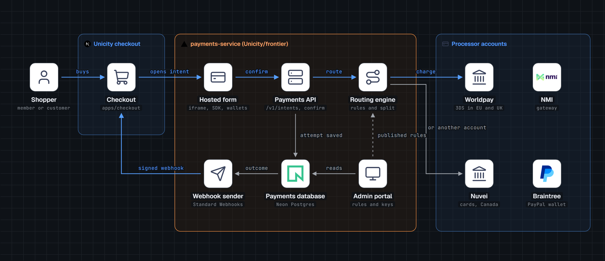
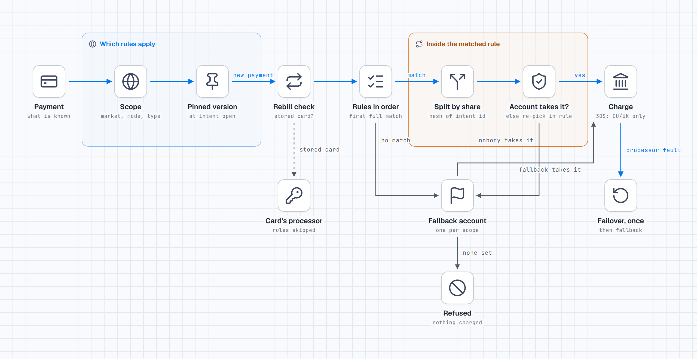
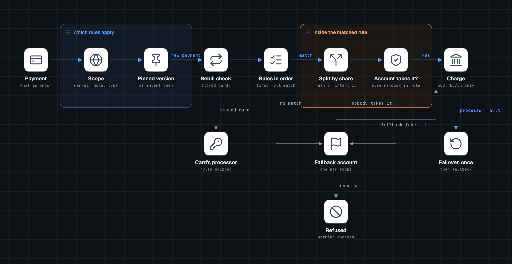
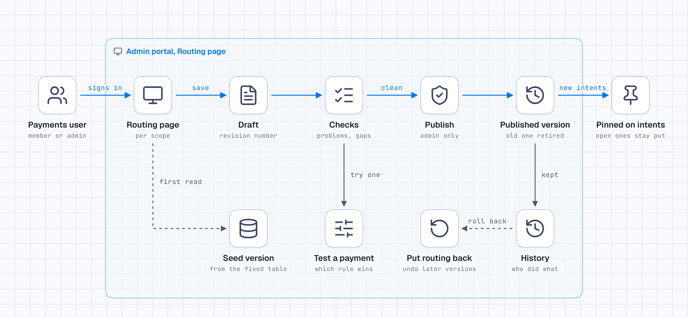
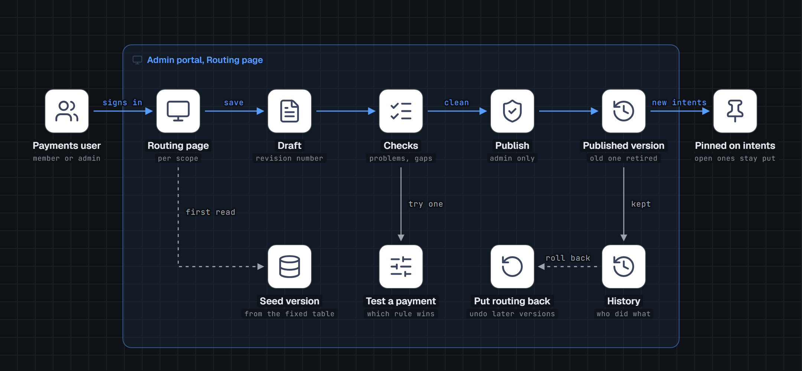
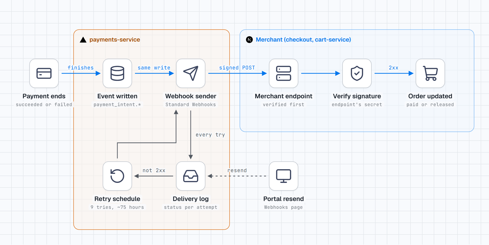
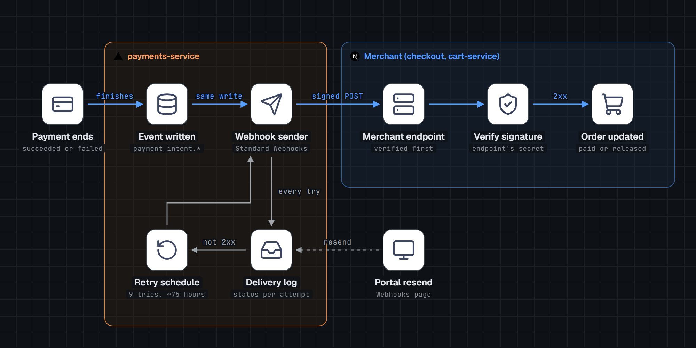

1. A card payment, end to end
Shopper, checkout, hosted form, payments API, routing engine, processor, signed webhook back to checkout.


2. How the engine picks an account, and fails over
Scope, pinned version, rebill check, rules in order, split, eligibility, charge; fallback, refused and one failover.


3. How a routing rule change goes live
Draft, checks, admin-only publish, versions; open payments keep their version; history and roll back.


4. How checkout hears a payment's result
Event written with the status, signed delivery, delivery log, 9 retries over about 75 hours, portal resend.

